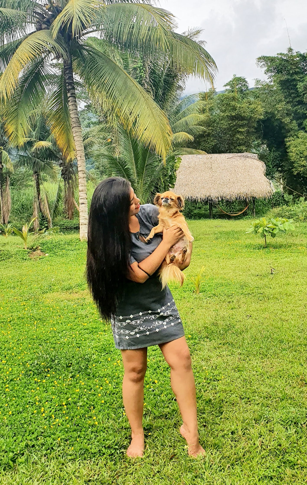
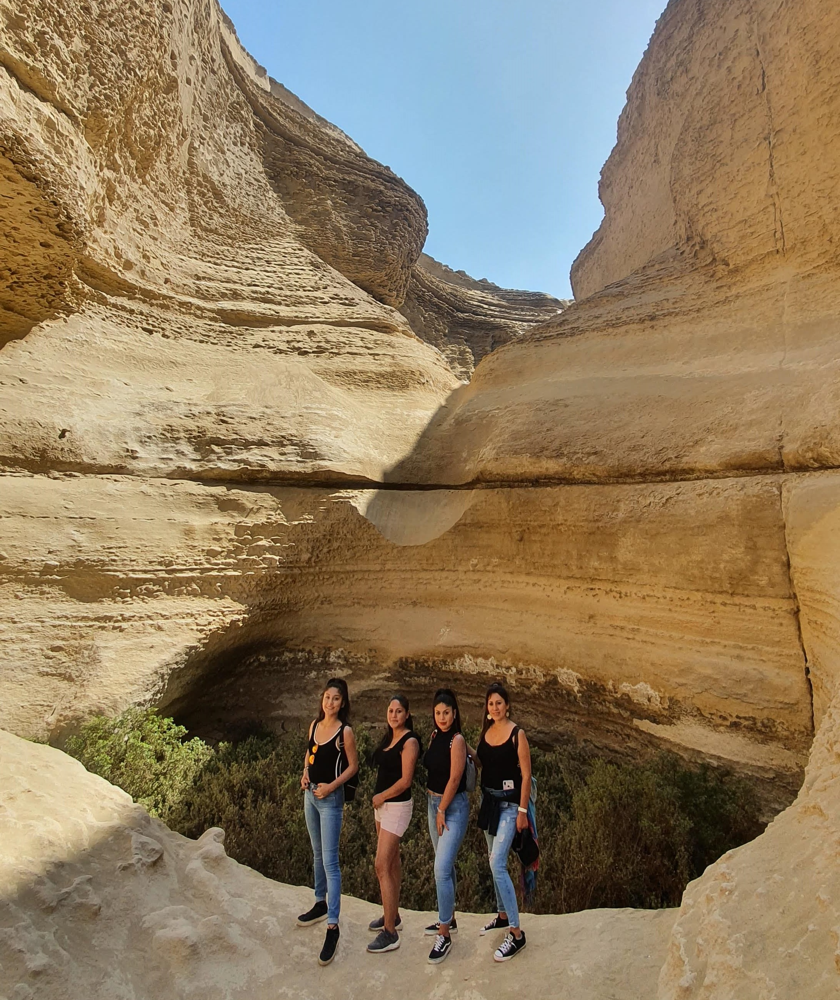

|  |
PRESENTACIÓN
Mi nombre es KAROL QUISPE GUTIERREZ
y soy de Ayacucho de la provincia
de Huanta y apasionada de las costumbres
Ayacuchanas como el Carnaval y la Semana Santa, que
son de mis fiestas favoritas y también me gustaría conocer las
costumbres de las regiones de todo el país.
Me gusta mucho viajar para conocer lugares nuevos o paisajes naturales,
comidas y sabores nuevos, personas y costumbres. Suelo viajar
con mis hermanas y mis padres, porque somos una familia viajera, unida,
divertida y siempre animados de conocer y explorar.
|  |